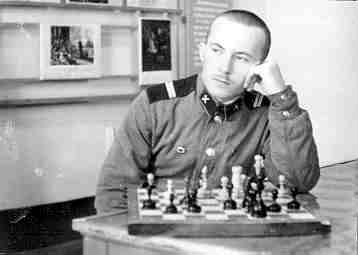
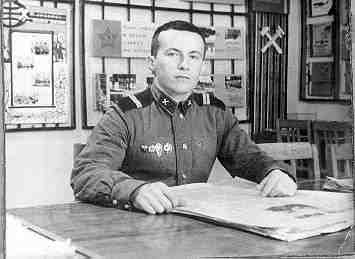
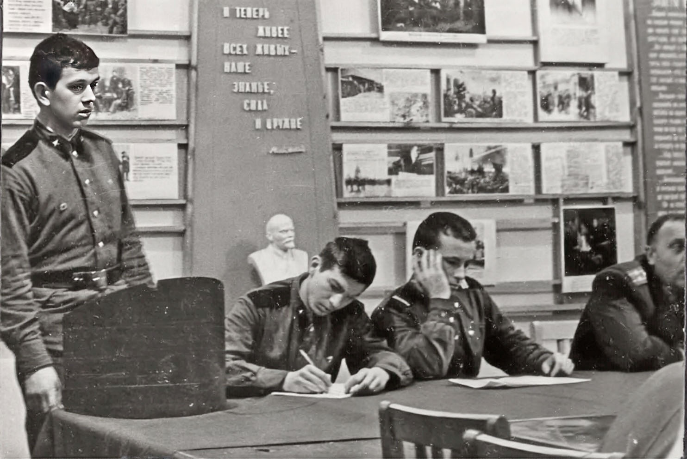
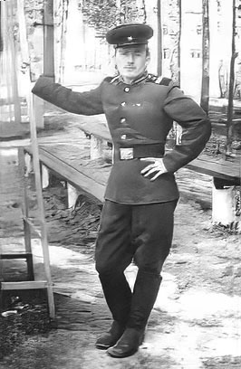
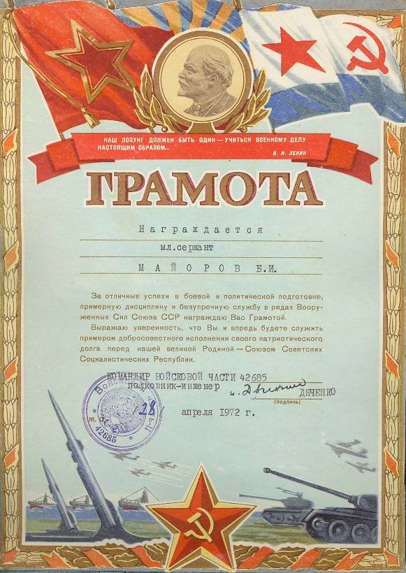

 В минуты отдыха. Последний год службы. |
  Командир нашей базы полковник Дяченко на комсомольском собрании части, где мне доверили вести собрание. Ему, наверно, доложили, что есть такой солдат, который поступил в военную академию, но его отсеяла комиссия из-за отсутствия членства в ВЛКСМ. В увольнении, весной 1972 года. Шерстяной мундир старого образца я носил ежедневно в жаркое лето 1972 года во время повторной сдачи экзаменов в академию. Все остальные абитуриенты из войск были в мундирах нового образца и им разрешалось на занятиях быть в рубашках без кителя. Если бы меня кто-то направлял, то смог бы поступать в второй раз в академию в звании старшего сержанта и кандидата в члены КПСС. Но тогда мне политическая составляющая режима не была очевидна и я не пополнил ряды приспособленцев, сдавших свою родную партию в 3 дня 1991 года. |
